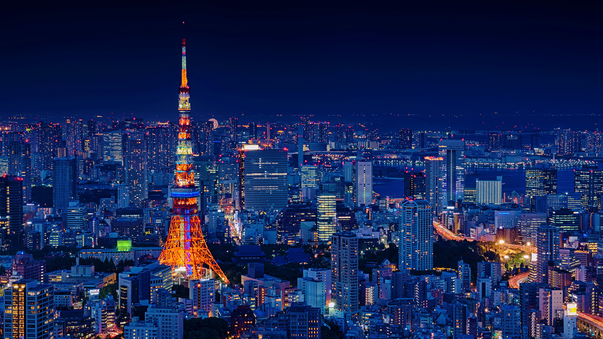
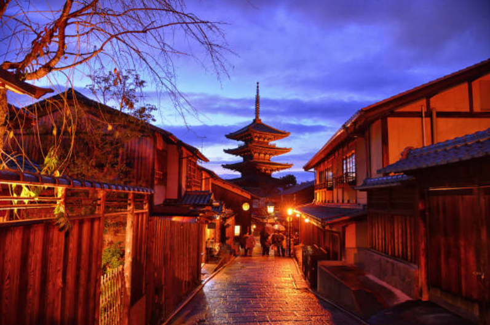
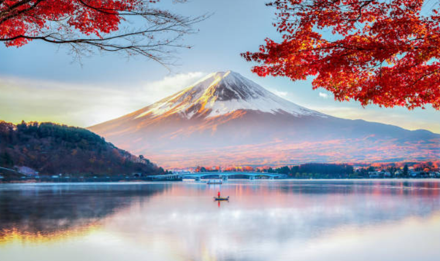
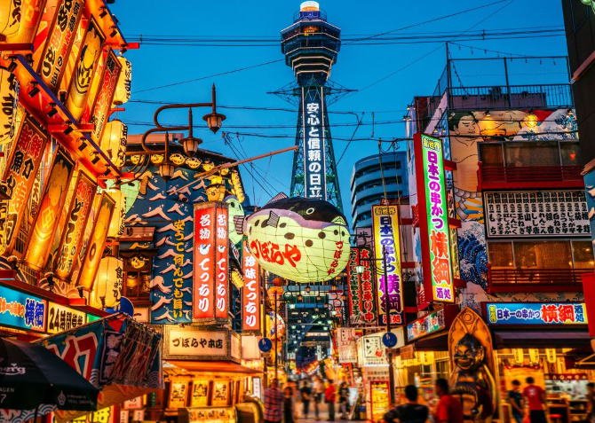

Destinations in Japan
Whether you're chasing the neon buzz of a mega-city or the quiet calm of a mountain town, Japan has a place that will completely steal your heart. Here are some of the most popular destinations that you should visit in your trip to japan:

Tokyo
Japan's bustling capital mixes ultra-modern skyscrapers with historical temples. Experience the world-famous Shibuya Scramble, neon lights, and incredible street food

Kyoto
Famous for its classic Buddhist temples, gardens, imperial palaces, and traditional wooden houses. Its the ultimate destination to experience traditional Japanese culture.

Mount Fuji
An iconic active volcano and Japan's highest peak. Surrounded by scenic lakes, it offers breathtaking and unforgettable hiking opportunities.

Osaka
Known for its modern architecture, vibrant nightlife, and mouth-watering street food like takoyaki and okonomiyaki in the heart of Dotonbori
Do's & Don'ts In Japan
Here's a list of things to do and not to do when going to Japan:
Do's:
- Bow slightly when greeting, thanking, or saying goodbye.
- Remove your shoes when stepping onto raised floors at entryways, temples, or traditional restaurants (look for provided slippers).
- Keep your trash with you; public trash cans are rare, so carry a small plastic bag in your daypack.
- Carry cash (yen); small restaurants, market stalls, and transport top-ups often don't take cards.
Don'ts:
- Don't tip. Excellent service is standard, and leaving extra money creates confusion or discomfort.
- Don't talk loudly or take phone calls on trains and buses. Keep devices on silent mode.
- Don't eat or drink while walking. Finish food near the vendor, convenience store, or vending machine where you bought it.
- Don't blow your nose loudly in public. Step away or visit a restroom instead.